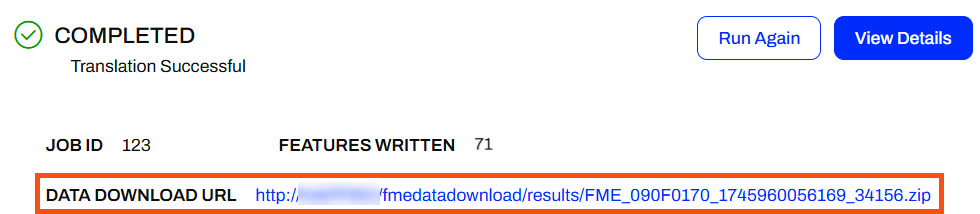
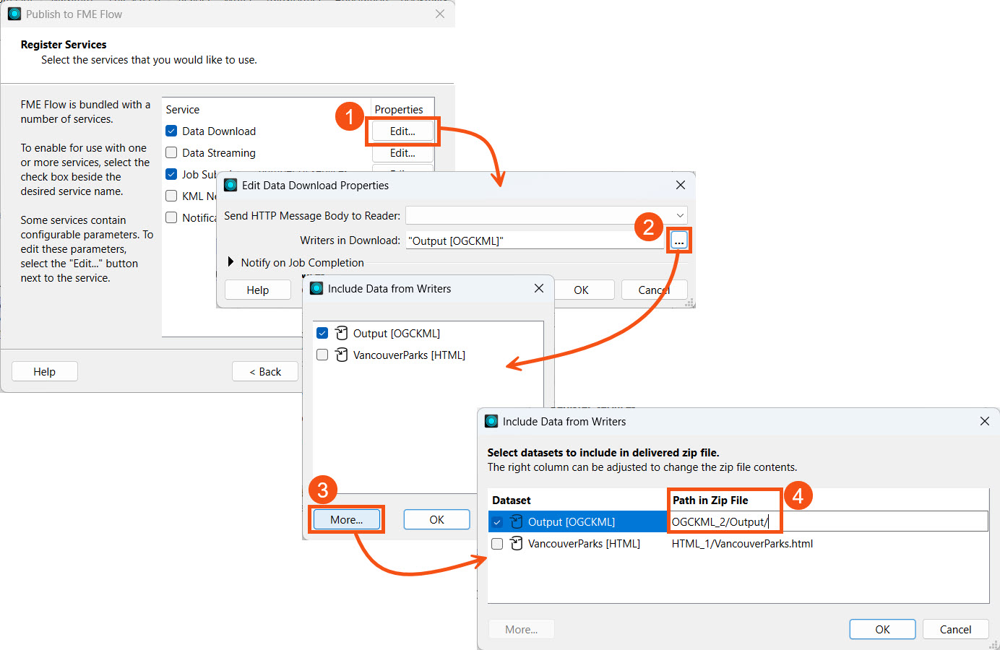
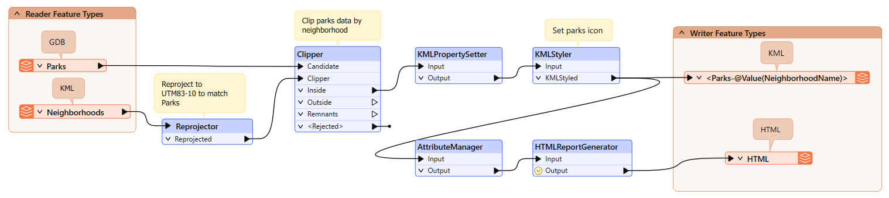
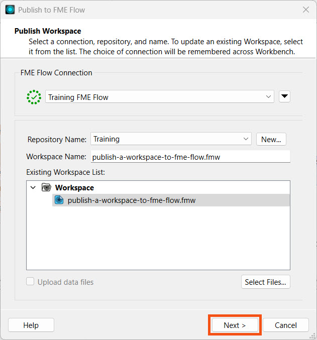
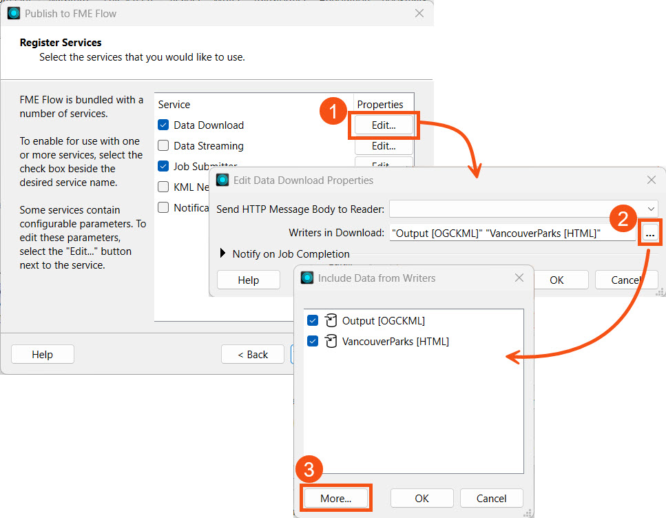
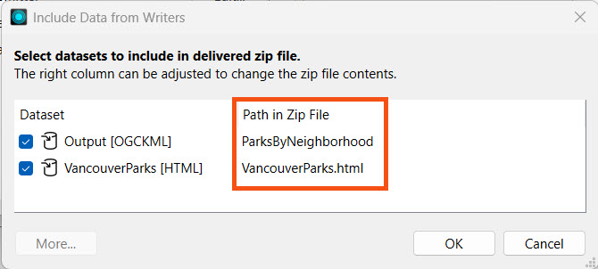
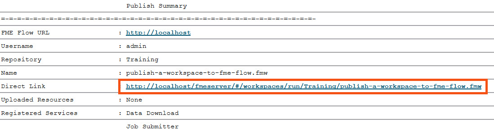
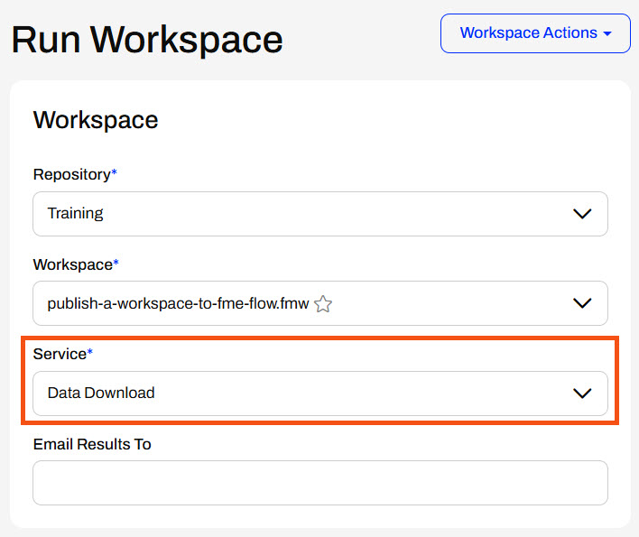
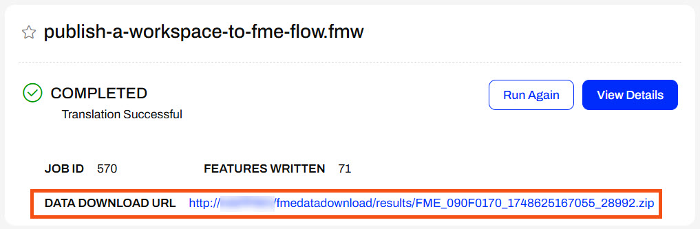

It is not possible to execute a data download on a workspace whose output destination is a database format. Data download can only be used with workspaces that write single or multiple files.
After completing this lesson, you’ll be able to:
The Data Download service is one of the common FME Flow transformation services. The service allows you to download a workspace's output data after the workspace finishes running on FME Flow. Instead of writing the data to the location you set in the Writer, FME Flow packages the data into a zipped file and presents it to the user as a URL linking to the download. FME Flow uses a zip file download to include multiple datasets in the output results and accommodate folder-based datasets containing multiple files.

When authoring the workspace in FME Workbench, you can specify and control which datasets to include in the results, the format of the data, and which coordinate system the data uses.
It is not possible to execute a data download on a workspace whose output destination is a database format. Data download can only be used with workspaces that write single or multiple files.
The transformation services you register a workspace with can be set and edited directly on FME Flow or when publishing the workspace from FME Workbench.
You register workspace services when publishing a workspace from FME Workbench to FME Flow. To change a workspace's services, you must complete the entire publishing process again; republishing a workspace does not alter the services from settings used when you first published the workspace.

For workspaces on FME Flow, modifying the services on FME Flow is easier than going through the entire publishing process again in FME Workbench. However, for the Data Download service, you can edit the folder path structure of the data in the zipped folder when publishing.
By default, the data download folder structure within the zip file separates datasets by writer format into folders. You may alter the Data Download zip file folder structure when publishing from FME Workbench.

As of FME 2025.0.1, you cannot alter the data download folder structure from FME Flow and it must be done while publishing from FME Workbench.
Sven continues with his workspace, which filters Park data by neighborhood in Vancouver and produces KML output of Parks by neighborhood and an HTML summary report of the Parks. Sven recently learnt about the Data Download service on FME Flow and thinks it will benefit his colleagues to access the output Parks data using his workspace.
Sven continues working in his previous workspace in FME Workbench. Now, he will publish it again and register it with the Data Download service and customize the zip file path for the output.
Follow along with Sven's steps as he configures his workspace to use the Data Download service with a custom output zip file path.
Sven returns to his workspace in FME Workbench (C:\FMEData\Workspaces\DeployWorkflowsWithFMEFlow\publish-a-workspace-to-fme-flow.fmw).

Sven clicks Publish on the top toolbar to open the publishing wizard. He selects the Training repository, ensures the workspace name is deliver-data-on-demand.fmw, and clicks Next.

Sven registers the workspace with the Data Download and Job Submitter services. Next to Data Download, Sven clicks the Edit button. To modify the Writers in Download, Sven clicks the ellipses button to open a selection list for the writers. He ensures both the OGCKML and HTML writers are selected and then clicks More.

He further customizes the output by altering the Path in Zip File for each dataset. For the KML output, Sven configures the KML datasets to be grouped into a folder called ParksByNeighborhood. For the HTML file, Sven would like easy access to it so that it isn't nested in a folder, so he removes the default folder and leaves the file name VancouverParks.html.
| Output [OCGKML] | ParksByNeighborhood |
| VancouverParks [HTML] | VancouverParks.html |

Sven clicks OK three times to close all the windows and then clicks Publish to finish publishing the workspace to FME Flow.
If publishing fails, you might receive the following error message in the translation log:
Publish Failed - FME Flow encountered an error and reported the following message. Failed to publish item publish-a-workspace-to-fme-flow.fmw to repository Training. Reason was: The following readers or writers are included in an enabled service, but are not present in the workspace: [GML_1] Request to http://localhost/fmeapiv4/repositories/Training/items/upload?overwrite=true returned status code 422.
This is a known issue and renaming the workspace to a different name, such as deliver-data-on-demand.fmw, while publishing is the current workaround.
Sven checks the translation log to ensure the workspace was published successfully. Then, he clicks the Direct Link URL to open the FME Flow Run Workspace page directly.

Sven selects the Data Download service and clicks Run to submit the job.

After completing the job, Sven clicks on the Data Download URL link, and the zip file downloads.

Sven extracts the zip file and opens the contents.

Now, Sven can publish his workspaces using the Data Download so that his colleagues can run them and gain easy access to their data faster than ever before.